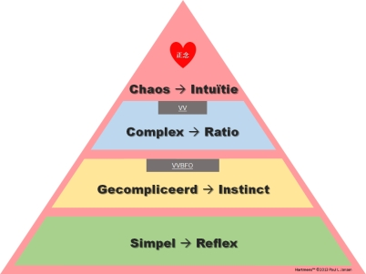

Stress is de (onnodige*) combinatie van negatieve emoties en
automatische, biologische reacties
daarop, wat zich
vertaalt naar gedrag. De
hoeveelheid energie achter de negatieve emotie bepaalt onze
stressbeleving en de gevolgen daarvan. In het overzicht
hieronder is weergegeven hoe de automatische emotionele reactie op
'iets' uit onze omgeving, maar ook uit ons eigen brein (gedachten),
tot een combinatie tussen die emotie en een bepaalde hoeveelheid
energie leidt. De emotie bepaalt of deze 'gezond' of 'ongezond' is;
de hoeveelheid energie bepaalt de mate waarin.
Wat we met 'stress' bedoelen staat links en is altijd schadelijk maar vooral bij 'hoge energie'. Bij
voorkeur en bewust gestuurd streeft de mens naar allerlei
omstandigheden die 'de automatische, biologische reacties'
opleveren die rechts staan; die gezond zijn. Sommigen noemen dat
ook wel 'positieve stress', maar dat is erg verwarrend: Stress
is altijd
negatief en de rechtse reacties zijn
positief en wisselend van energie.

N.B. *Negatieve emoties gecombineerd met hoge
energie zijn in bepaalde omstandigheden per saldo 'gezond',
bijvoorbeeld wanneer we grote angst ervaren bij een
levensbedreigende situatie en juist dankzij deze grote stress
daarvan wegvluchten (en overleven). Emoties en automatische
biologische reacties zijn precies voor dat soort omstandigheden
bedoeld.
Dit boek is voortgekomen vanuit mijn fascinatie
met Stress. Wat is Stress? en vooral; waarom is (er) Stress? En
uit mijn overtuiging dat
Stress (inclusief stress als gevolg van verkeerde voeding) de
oorzaak is van bijna alle (zoniet alle) ziektes:
stress is de oorzaak van
ongezondheid, en dat
het voorkomen en/of oplossen van stress de oorzaak van ongezondheid
wegneemt...
Als Hoofdmens kun je Stress niet structureel
oplossen, alleen het Hart biedt oplossingen voor de destructieve
gevolgen van Stress en het Hart biedt mogelijkheden om Stress te
voorkomen.
Bottum-up stress kan gelukkig top-down vanuit het
hart worden bestreden, zelfs op verschillende manieren, zie
verderop.
Stress op zichzelf bestaat overigens niet. Stress
(negatief) is wat de bestaande programma's ergens van maken, dus de
gevolgen van bepaalde interpretaties, oordelen of gedachten: de
zaken van Hoofdmensen. Onderzoek van het HeartMath Institute heeft
uitgewezen dat een positieve emotionele toestand van echte liefde,
zorg, waardering en medeleven orde schept (ofwel: coherentie) in
het ritmische (elektromagnetische) kloppend patroon van het hart.
En het omgekeerde is ook waar: negatieve emotionele toestanden
zoals angst, woede en haat zorgen voor een chaotisch
hartritmepatroon (incoherentie). Onderzoekers hebben ook ontdekt
dat de orde of chaos in ons hartritmepatroon ons hele lichaam tot
op het cellulaire niveau (hormonale, immuun- en DNA reacties)
beïnvloedt terwijl onze emotionele energie uitstraalt tot
buiten ons lichaam en tot 'in' andere mensen die in de buurt
zijn.